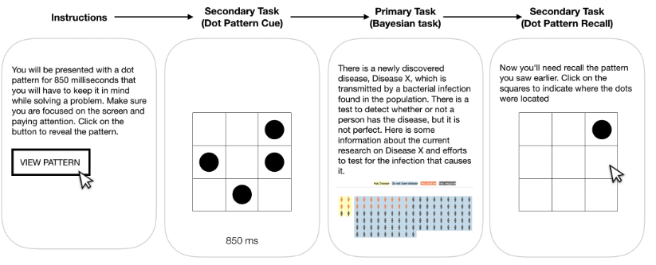
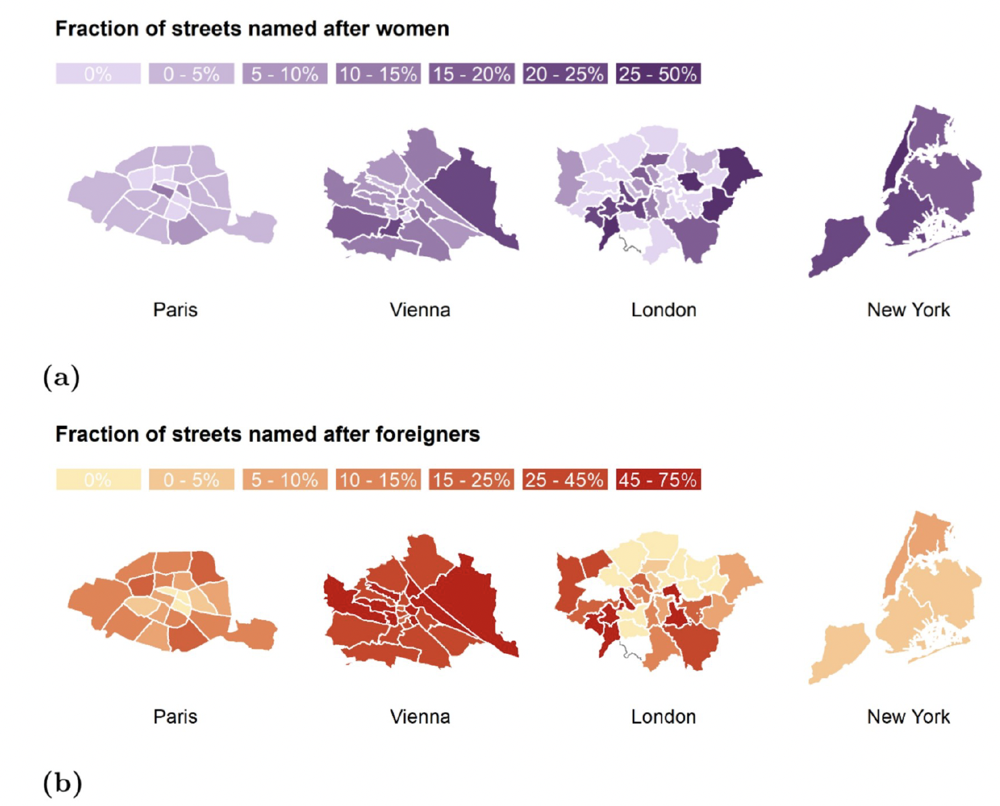
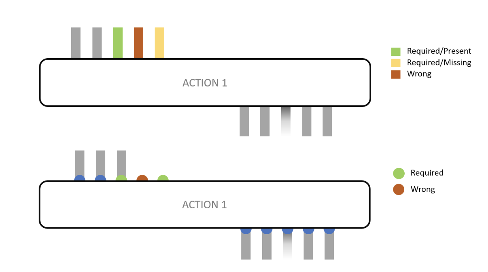
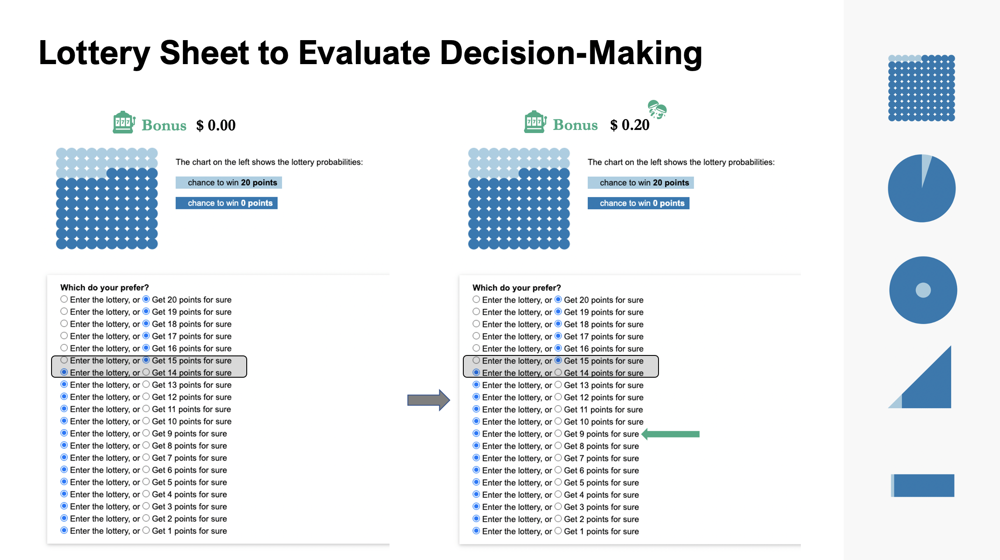
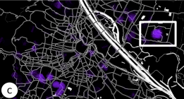
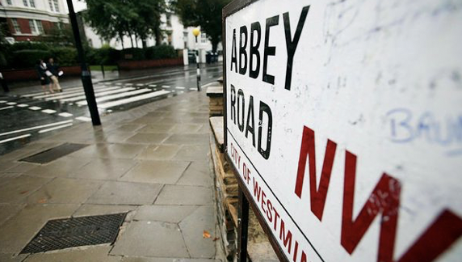

I am a fifth year CSE PhD Candidate at Washington University in St. Louis working with Dr. Alvitta Ottley in the Visual Interface and Behavior Exploration Lab (VIBE). Prior to WashU, I completed my B.A. in Computer Science at Smith College with Architecture & Design as a second major.
My research interests are at the intersection of Human-Computer Interaction, Data Visualization and Explainable AI. My recent work has focused on investigating how visualizations can impact reasoning and decision-making under uncertainty and developing interactive interfaces that facilitate human-AI teaming. In my work, I leverage interdisciplinary approaches to evaluate decision-making across populations with varying cognitive traits.
Latest Research

Why Combining Text and Visualization Could Improve Bayesian Reasoning: A Cognitive Load Perspective
Melanie Bancilhon, AJ Wright, Sunwoo Ha, Jordan Crouser, Alvitta Ottley
ACM CHI Conference on Human Factors in Computing Systems, 2023

Streetonomics: Quantifying culture using street names
Melanie Bancilhon, Marios Constantinides, EP Bogucka, Luca Maria Aiello, Daniele Quercia
PLoS ONE 16(6): e0252869, 2021
PDF

VizXP: A Visualization Framework for Conveying Explanations to Users in Model Reconciliation Problems (in print)
Ashwin Kumar, Stylianos Loukas Vasileiou, Melanie Bancilhon, William Yeoh, Alvitta Ottley
ICAPS Conference on Automated Planning and Scheduling, 2021

Let’s Gamble: How a Poor Visualization Can Elicit Risk Behavior
Melanie Bancilhon, Zhengliang Liu, Alvitta Ottley
IEEE Transactions on Visualization and Computer Graphics, 2020
PDF
Video
 Uncovering User Interest during Data Exploration via Unsupervised Clustering (under review)
Uncovering User Interest during Data Exploration via Unsupervised Clustering (under review)
Sunwoo Ha, Robert Costales, Melanie Bancilhon, Surina Puri, Alvitta Ottley
ACM CHI Conference on Human Factors in Computing Systems, 2020
PDF

Cartographic Design of Cultural Maps (in print)
Edyta Paulina Bogucka, Marios Constantinides, Luca Maria Aiello, Daniele Quercia, Wonyoung So, Melanie Bancilhon
IEEE Transactions on Computer Graphics and Applications, 2020
PDF Video
Selected Press

BBC.com
'Streetonomics': What our addresses say about us
"Since the beginning of time, rulers have used spatial engineering as a form of social engineering," write Melanie Bancilhon of Washington University in St Louis and colleagues at Nokia Bell Labs